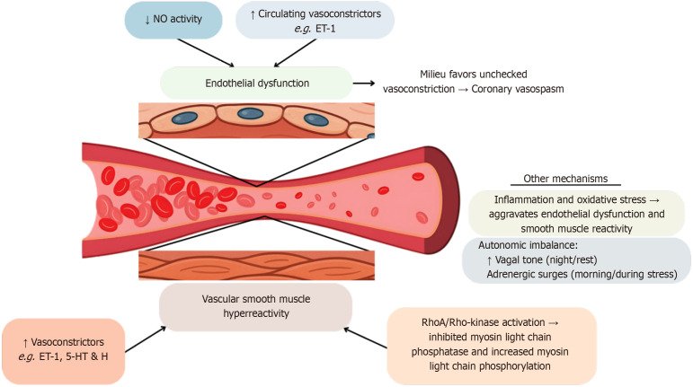
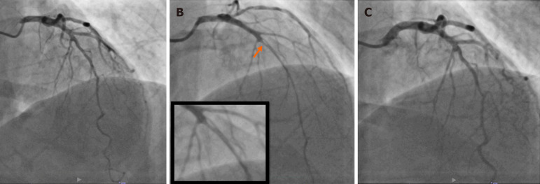
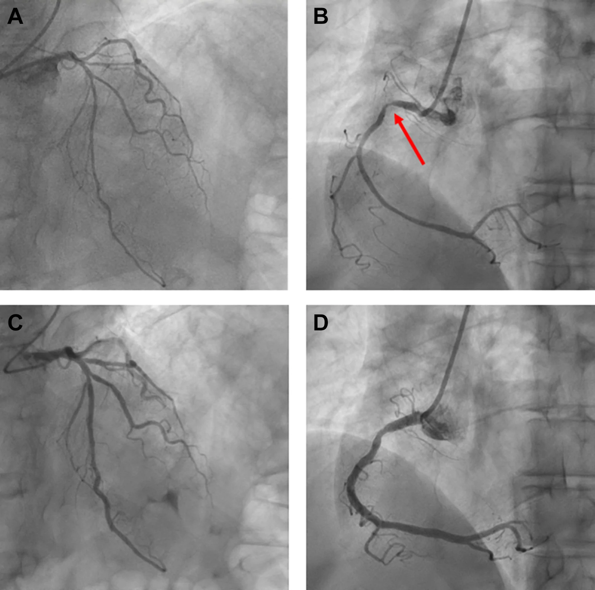
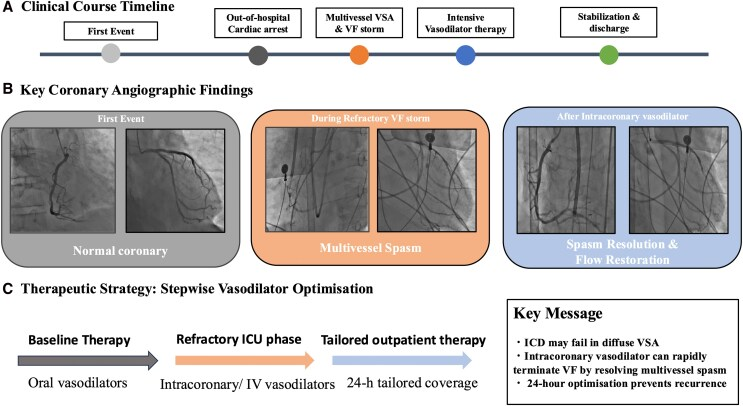

1897 — Co thắt mạch vành & MINOCA: khi mạch vành "sạch" mà vẫn nhồi máu / Vasospastic angina & MINOCA
Tags: pattern:co-that-mach pattern:hep-dai-nhan pattern:tac-mach-vanh vung:vanh protocol:chup-mach-vanh protocol:OCT-IVUS score:COVADIS incidentaloma:khong
Mức chắc chắn (certainty): tổng hợp y văn (literature synthesis) — số liệu từ ba bài tổng quan có định lượng (PMC12576579, PMC12128388, PMC13413844) và ba ca nguyên văn có ảnh mạch vành (PMC13554914, PMC13387067, PMC13655449). Chỗ suy luận được ghi rõ; ngưỡng điều trị lấy từ đồng thuận COVADIS 2017 và guideline, không có thử nghiệm ngẫu nhiên riêng cho co thắt.
Câu chốt: Co thắt mạch vành là co thắt thoáng qua > 90% lòng mạch, gây đau ngực + thay đổi ST + troponin tăng, nhưng mạch vành có thể hoàn toàn bình thường sau 5 phút. Ba con số quyết định: (1) MINOCA chiếm 5–15% mọi nhồi máu cơ tim; (2) trong ANOCA, co thắt gặp 28% ở nữ / 25% ở nam, còn CMD 41% — và hơn nửa ca co thắt có kèm rối loạn vi mạch; (3) không dùng chẹn beta đơn thuần — thuốc này có thể làm co thắt nặng hơn; CCB là nền tảng, còn thuốc tan sợi huyết là chống chỉ định khi nghi co thắt/SCAD.
1. Tổng quan bệnh học – cơ chế hình ảnh (TẠI SAO)
1.1 TẠI SAO một động mạch "không hẹp" vẫn gây nhồi máu
- Co thắt mạch vành (coronary vasospasm) là co cơ trơn thành mạch làm hẹp lòng mạch thoáng qua, điển hình > 90% đường kính — ngưỡng này chính là định nghĩa dương tính trên chụp mạch, không phải "hẹp nhẹ".
- Cơ chế gồm ba trục chồng lấp (PMC12576579):
- Rối loạn chức năng nội mô (endothelial dysfunction): giảm hoạt tính NO → mất đối trọng giãn mạch; vì thế acetylcholine (ACh) — bình thường gây giãn — lại gây co thắt nghịch lý ở đoạn dễ co thắt. Đa hình eNOS T-786C liên quan tới tăng nhạy cảm.
- Tăng phản ứng cơ trơn (vascular smooth muscle hyperreactivity): tăng hoạt RhoA/Rho-kinase → ức chế myosin light chain phosphatase → tăng nhạy cảm calci và co cơ mạnh dù nồng độ calci không tăng. Đây là lý do fasudil (ức chế Rho-kinase) cắt cơn co thắt tức thì.
- Mất cân bằng thần kinh tự chủ: tăng trương lực phó giao cảm ban đêm + đợt adrenergic buổi sáng → cơn xuất hiện về đêm – sáng sớm và dao động theo giờ.
- TẠI SAO hình ảnh "âm tính": co thắt là hiện tượng chức năng, không để lại mảng xơ vữa. Khi cơn qua, lòng mạch trở lại bình thường → CTA/CT và cả chụp mạch sau khi tiêm giãn mạch đều có thể bình thường. Vì vậy "mạch vành sạch" không loại trừ bệnh, và chụp mạch bình thường trong cơn đã được xử lý giãn mạch là một bẫy chẩn đoán (ca PMC13554914 dưới đây).
- TẠI SAO vẫn có troponin tăng và ST chênh: thiếu máu dưới nội tâm mạc trong cơn → ST chênh ≥ 0,1 mV ở ≥ 2 chuyển đạo liên tiếp, troponin tăng theo mức độ thiếu máu; khi co thắt bít hoàn toàn → STEMI thoáng qua, có thể dẫn tới VF/ngừng tim. Đau ngực – ECG – troponin giống hệt nhồi máu do huyết khối, chỉ khác thời gian và cơ chế.
1.2 Dịch tễ và các con số định lượng
- MINOCA (nhồi máu cơ tim không tắc nghẽn, hẹp < 50% trên chụp mạch): 5–15% mọi nhồi máu cơ tim (PMC13413844); một tổng quan khác ghi 2–10% (PMC12128388) — chênh do tiêu chuẩn và dân số, nên ghi khoảng 5–15% khi trích dẫn guideline mới.
- ANOCA (đau ngực, mạch vành không tắc nghẽn): phân loại 159 ca trong một nghiên cứu Anh cho VSA 53 (33,3%), CMD 24 (15,1%), CMD + VSA 17 (10,7%), rối loạn chức năng nội mô + VSA 4, ba rối loạn 3, không phát hiện bất thường 58 (36,5%) (PMC12931529). Nghĩa là gần 2/3 ca ANOCA có bất thường chức năng đo được — "không hẹp" không đồng nghĩa "không bệnh".
- Meta-analysis > 14.000 bệnh nhân không hẹp: CMD 41% (nữ nhiều hơn, RR 1,45); co thắt chung 28% nữ / 25% nam (p = 0,654); co thắt vi mạch lại nữ 64% vs nam 36%, co thắt thượng tâm mạc nam 61% vs nữ 39% (PMC12576579).
- ACh dương tính 68% trong 187 bệnh nhân đau ngực không hẹp, và hơn một nửa trong số đó có kèm bất thường vi mạch (PMC12576579).
- Yếu tố khởi phát: hút thuốc lá là yếu tố nguy cơ mạnh nhất; rượu (đặc biệt uống nhiều/ cai rượu), lạnh (nghiệm pháp nước lạnh tái hiện co thắt ở tới 2/3 người nhạy cảm), căng thẳng, tăng thông khí; mùa đông–xuân nhiều cơn hơn.
- Biến chứng khi làm nghiệm pháp: biến cố < 1% trong thực hành hiện đại; một registry Nhật ghi 6,8% rối loạn nhịp trong lúc làm test — tương đương tần suất xảy ra khi cơn tự phát và không dự báo kết cục xấu dài hạn (PMC12576579).

Sơ đồ cơ chế: giảm NO + tăng chất co mạch (ET-1) → rối loạn nội mô; tăng hoạt RhoA/Rho-kinase và tăng nhạy cảm calci → cơ trơn tăng phản ứng; mất cân bằng tự chủ (đêm/sáng) tạo "môi trường" cho co thắt. Nguồn: Ralota KK, Layland J — World J Cardiol 2025 (PMC12576579), CC BY-NC 4.0.2. Mẫu hình + chẩn đoán phân biệt theo cơ chế (Gamut)
- Cùng một bệnh cảnh "đau ngực + troponin + mạch vành không hẹp" có 6 cơ chế, chia theo vị trí tổn thương:
- Thượng tâm mạc, co thắt: VSA khu trú (focal) — thường tại mảng xơ vữa nhẹ/không tắc nghẽn, dễ tái phát cùng chỗ; và lan tỏa (diffuse) — nhiều đoạn, nhiều nhánh, nguy cơ rối loạn nhịp ác tính cao hơn.
- Thượng tâm mạc, không co thắt: mảng xơ vữa nứt/bào mòn (plaque rupture/erosion) — chiếm phần lớn MINOCA do xơ vữa, không thấy trên chụp mạch, chỉ thấy trên OCT/IVUS; SCAD (xem 1900); thuyên tắc vành (rung nhĩ, van nhân tạo, ASD bít dù, u nhầy).
- Vi mạch: CMD (IMR ≥ 25, CFR < 2,0 không có co thắt thượng tâm mạc) và co thắt vi mạch** (ACh gây đau + ST chênh nhưng **không hẹp > 90% thượng tâm mạc).
- Không do mạch vành: Takotsubo, viêm cơ tim — là kẻ bắt chước, phải loại bằng MRI tim trước khi gọi MINOCA.
- Mnemonic "SPASM" cho MINOCA: SCAD, Plaque disruption (rupture/erosion), Artery embolism, Spasm (epicardial/microvascular), Microvascular dysfunction; cộng thêm Takotsubo/myocarditis là nhóm giả MINOCA.
- TẠI SAO phân biệt quan trọng: co thắt dùng CCB, SCAD tránh can thiệp và tránh chẹn beta đơn thuần? (thực tế SCAD dùng chẹn beta để giảm shear stress — xem 1900), mảng nứt dùng kháng kết tập + statin, thuyên tắc dùng kháng đông, viêm cơ tim dùng ức chế miễn dịch. Cùng một hình ảnh "mạch vành sạch", bốn hướng điều trị khác nhau.
3. Bảng so sánh phân biệt (ma trận đối chiếu)
| Thực thể (entity) | Hình ảnh điển hình | Chốt vào (rule-in) | Chốt loại (rule-out) | Gợi ý xác nhận |
|---|---|---|---|---|
| VSA thượng tâm mạc | CAG: co thắt > 90% khu trú/lan tỏa, hồi phục sau nitrate 200 µg; CTA: mạch vành bình thường hoặc mảng < 50% | Đau ngực về đêm–sáng + ST chênh ≥ 0,1 mV ≥ 2 chuyển đạo + > 90% co thắt khi ACh/ergonovine + hết sau nitrate (COVADIS 2017) | Co thắt tại đầu catheter không kèm đau/ST → co thắt do catheter, không phải VSA; hẹp cố định không đổi sau nitrate → xơ vữa | Holter/ECG trong cơn; nghiệm pháp ACh/ergonovine; CMR loại trừ viêm/Takotsubo |
| Co thắt vi mạch | CAG: không có co thắt > 90% thượng tâm mạc; ACh gây đau + ST chênh; IMR ≥ 25 / CFR < 2,0 | Đau + ST chênh khi ACh nhưng lòng mạch thượng tâm mạc không hẹp > 90%, kèm IMR/CFR bất thường | Co thắt thượng tâm mạc (có > 90%) → VSA; CMD thuần (không đau/ST khi ACh) → CMD | Đo IMR/CFR thì đầu; ACh liều tăng dần |
| CMD | Không tổn thương thượng tâm mạc; CFR < 2,0, IMR ≥ 25, không co thắt khi ACh | CFR < 2,0 + IMR ≥ 25 + đau ngực/khó thở khi gắng sức, không hẹp | CFR ≥ 2,0 và IMR < 25 → không CMD; hẹp ≥ 50% → bệnh mạch vành tắc nghẽn | Adenosine/adenosine-free test; siêu âm tim gắng sức |
| SCAD | Hẹp dài nhẵn > 20 mm, hai lòng mạch/IMH, không canxi; OCT thấy vạt nội mạc | Hẹp dài nhẵn không xơ vữa ở nữ trẻ, OCT/IVUS có IMH/false lumen | Hẹp khu trú có canxi/bờ gồ ghề → xơ vữa; co thắt hồi phục sau nitrate → VSA | OCT/IVUS; CMR; không tiêu sợi huyết |
| Mảng nứt/bào mòn | CAG: hẹp < 50% hoặc không thấy; OCT: vạt mảng, huyết khối trắng, bào mòn không vỡ | OCT/IVUS có mảng nứt/bào mòn + huyết khối ở vùng động mạch thủ phạm | OCT không thấy mảng/huyết khối + không co thắt → tìm nguyên nhân khác | OCT (ưu thế), IVUS; CMR tìm LGE dưới nội tâm mạc |
| Takotsubo / viêm cơ tim | Rối loạn vận động vượt quá 1 lãnh thổ vành; phù cơ tim; LGE giữa thành/dưới thượng tâm mạc (viêm) hoặc không LGE (Takotsubo) | MRI: phù + LGE không theo lãnh thổ; Takotsubo: ballooning + không LGE | LGE dưới nội tâm mạc theo lãnh thổ → nhồi máu thật; co thắt > 90% → VSA | MRI tim ≤ 10 ngày; troponin/ECG; chụp mạch thì đầu |

Chụp mạch vành trái: (A) thì đầu bình thường; (B) co thắt > 90% đoạn giữa LAD (mũi tên cam, khung phóng đại) sau ACh nội mạch; (C) hồi phục hoàn toàn sau nitroglycerin 200 µg. Đây là mẫu hình "chốt vào" của VSA: co thắt + đau + ST chênh + đảo ngược bằng nitrate. Nguồn: Ralota KK, Layland J — World J Cardiol 2025 (PMC12576579), CC BY-NC 4.0.Đọc nghiệm pháp co thắt đúng cách
- Dương tính thật cần đủ 3 thành phần: (1) tái hiện đau ngực quen thuộc, (2) thay đổi ST ≥ 0,1 mV ở ≥ 2 chuyển đạo liên tiếp (hoặc sóng U âm mới), (3) co thắt > 90% trên chụp mạch. Thiếu một thành phần = không kết luận (equivocal).
- Liều thường dùng: ACh 20 → 50 → 100 µg bơm nội mạch vành trái trong 20 giây mỗi liều (20–50 µg cho vành phải); ergonovine 16 → 32 → 64 µg. Sau mỗi liều chụp lại; ngừng ngay khi dương tính và bơm nitrate 200 µg.
- Chống chỉ định tương đối: hẹp thân chung trái hoặc hẹp ba nhánh nặng, EF thấp, suy thận nặng, cơn hen cấp; không làm trong pha cấp khi huyết động chưa ổn định (ca PMC13387067 đã hoãn nghiệm pháp vì đang có VF storm).
4. Protocol chụp + phân độ COVADIS + sơ đồ quyết định
4.1 Trình tự chẩn đoán (không phải RADS, nhưng có "phân độ" COVADIS)
- COVADIS 2017 chia VSA chắc chắn (definite) và VSA nghi ngờ (suspected):
- Definite VSA = đau ngực đáp ứng nitrate + bằng chứng co thắt (co thắt > 90% khi nghiệm pháp hoặc co thắt tự phát trên chụp mạch hoặc ST chênh thoáng qua trong cơn kèm đau).
- Suspected VSA = đủ lâm sàng điển hình nhưng thiếu bằng chứng khách quan.
- Trước khi chụp xâm lấn: ECG trong cơn (Class I), Holter/giám sát ST khi cơn nhiều (IIa), nghiệm pháp gắng sức buổi sáng (cơn thường xuất hiện/ nặng hơn buổi sáng), CTA vành để loại mảng xơ vữa, MRI tim ≤ 10 ngày để loại viêm cơ tim/Takotsubo (CMR đặt được chẩn đoán xác định 63% và tái phân loại tới 2/3 ca MINOCA — PMC13413844).
- Khi chụp mạch: không tiêm giãn mạch nội mạch trước nếu đang tìm co thắt tự phát; nếu mạch vành bình thường mà lâm sàng mạnh → làm nghiệm pháp ACh/ergonovine; nếu không làm được (huyết động không ổn định) → điều trị theo COVADIS lâm sàng và theo dõi.
- Sau chẩn đoán: siêu âm tim (EF, vận động vùng), theo dõi Holter nếu có ngất/loạn nhịp, đánh giá nguy cơ đột tử (VSA + VF/ngất → cân nhắc ICD), và điều trị nền CCB liều tối ưu.
flowchart TD
A["Đau ngực + troponin tăng"] --> B["Chụp mạch vành CAG"]
B --> C{"Hẹp ≥ 50%?"}
C -- "Có" --> D["Bệnh mạch vành tắc nghẽn"]
C -- "Không" --> E["MINOCA: MRI tim ≤ 10 ngày"]
E --> F{"LGE dưới nội tâm mạc theo lãnh thổ?"}
F -- "Có" --> G["Nhồi máu thật: tìm mảng nứt, thuyên tắc, SCAD"]
F -- "Không" --> H{"Phù + LGE không theo lãnh thổ?"}
H -- "Có" --> I["Viêm cơ tim hoặc Takotsubo"]
H -- "Không" --> J["Nghiệm pháp ACh hoặc ergonovine"]
J --> K{"Co thắt > 90% + đau + ST chênh?"}
K -- "Có" --> L["VSA thượng tâm mạc: CCB + nitrate"]
K -- "Không" --> M{"Đau + ST chênh nhưng không hẹp > 90%?"}
M -- "Có" --> N["Co thắt vi mạch: CCB + theo dõi"]
M -- "Không" --> O{"CFR < 2,0 hoặc IMR ≥ 25?"}
O -- "Có" --> P["CMD: điều trị triệu chứng"]
O -- "Không" --> Q["Theo dõi, tìm nguyên nhân khác"]
4.2 Điều trị (ngưỡng và liều có bằng chứng)
- CCB là nền tảng, cả non-DHP (diltiazem, verapamil) và DHP (amlodipine, benidipine, nifedipine); ca nặng có thể phối hợp hai nhóm. Nghiên cứu Hàn Quốc 1.586 bệnh nhân cho kết cục dài hạn tương đương, CCB thế hệ 2 ít ACS hơn (PMC12576579).
- Nitrate tác dụng dài thêm khi CCB chưa đủ; giữ khoảng không nitrate để tránh dung nạp (JCS).
- Tránh chẹn beta đơn thuần: có thể làm co thắt nặng hơn do mất đối trọng α; chỉ dùng khi có chỉ định khác (SCAD, loạn nhịp) và luôn kèm CCB.
- Refractory: nicorandil (JCS IIa), cilostazol 100 mg × 2/ngày (STELLA: giảm cơn 66,5% vs 17,6%, p = 0,009; không triệu chứng 76% vs 33%), fasudil (Nhật), magie hỗ trợ; statin hợp lý vì nội mô và mảng xơ vữa cận lâm sàng.
- Ngừng tim do VSA: hồi sinh + CCB liều cao/ phối hợp, cân nhắc ICD; ca VF storm kháng trị có thể cần giãn mạch nội mạch cấp để cắt vòng xoắn (PMC13387067).
5. Biến thể bình thường và cạm bẫy
- Co thắt do catheter (catheter-induced spasm): thường khu trú ngay đầu catheter, không kèm đau/ST chênh, hết khi rút/ bơm nitrate — không đủ tiêu chuẩn VSA. Đây là "dương tính giả" hay gặp nhất.
- Giãn mạch trước khi chụp làm mất dấu: tiêm nitrate/nicardipine nội mạch để "cho đẹp hình" có thể xóa co thắt tự phát → chụp lần đầu bình thường, chẩn đoán bị bỏ. Ca PMC13554914 chính là bài học này: lần 1 có giãn mạch → bình thường; lần 2 không giãn mạch → co thắt lan tỏa + blốc nhĩ thất.
- Co thắt trên mảng xơ vữa: vị trí co thắt thường trùng mảng < 50%; gọi là "mạch vành sạch" rồi bỏ qua statin/kháng kết tập là sai. Ngược lại, co thắt không loại trừ bệnh mạch vành.
- "MINOCA lành tính": sai. MINOCA do CMR xác định có MACE OR 2,40 so với viêm cơ tim (1,09) và Takotsubo (1,16); OCT xác định MINOCA do xơ vữa có MACE 15,3% vs 4,5% (p = 0,015) và tái thông tổn thương đích 6,1% vs 0% (p = 0,030) (PMC13413844).
- Nghiệm pháp dương tính là yếu tố tiên lượng: ACh dương tính dự báo MACE HR 2,83 (1,16–6,93; p = 0,022) — không phải "test để biết cho vui" (PMC13413844).
- Bẫy thời điểm MRI: CMR làm quá sớm (< 24 giờ) có thể **âm tính** vì phù chưa rõ; làm **quá muộn** (> 10 ngày) giảm khả năng phát hiện phù. Khung hợp lý: 2–10 ngày.
- Bẫy điều trị: dùng thuốc tan sợi huyết ở MINOCA/co thắt (không có huyết khối) → chảy máu, làm lan SCAD; dùng chẹn beta đơn thuần → co thắt nặng hơn.
6. Tự lượng giá — Blind Quiz
Ca 1 — Nam 64 tuổi, đau ngực về đêm, ngất. Chụp mạch lần đầu "bình thường". Nhìn hình dưới, mô tả trước khi đọc đáp án.

- Hỏi: (1) A/B và C/D khác nhau ở đâu? (2) Vì sao lần chụp đầu bình thường? (3) Cơ chế gây blốc nhĩ thất?
Bấm để hiện đáp án
- (A) thân chung trái và LAD/LCx co thắt lan tỏa; (B) RCA co thắt gần tắc (mũi tên đỏ) đúng tại vị trí mảng nhỏ đã thấy lần đầu. (C, D) hồi phục hoàn toàn sau nitrate nội mạch → co thắt tự phát, không phải huyết khối.
- Lần chụp đầu bình thường vì đã tiêm giãn mạch nội mạch — co thắt bị xóa; đây là bẫy hay gặp ở phòng chụp mạch.
- Blốc nhĩ thất: RCA co thắt → thiếu máu nút nhĩ thất (nhánh nút AV) → Mobitz I tiến triển 2:1, gây ngất; điện tâm đồ Holter trong cơn có ST chênh lên thoáng qua + blốc. Điều trị verapamil 120 mg/ngày hết cơn và hết blốc.
- Nguồn: Trimaille A, Faucher L, Koenig B, Schatz A, Jesel L, Marzak H — JACC Case Rep 2026 (PMC13554914), CC BY-NC-ND 4.0.
Ca 2 — Nam 67 tuổi, STEMI thành dưới–bên trong đợt COVID-19, đã cấy S-ICD; 1 năm sau ngừng tim do VF storm. Nhìn hình, trả lời 3 câu.

- Hỏi: (1) Trong cơn VF, mạch vành có hẹp cố định không? (2) Vì sao VF kháng trị sốc điện? (3) Xử trí cấp cứu nào cắt được vòng xoắn?
Bấm để hiện đáp án
- Ảnh giữa: co thắt lan tỏa nhiều nhánh (RCA và LAD/LCx) khi đang VF storm; ảnh trái là mạch vành không hẹp lúc nhập viện; ảnh phải là hồi phục sau giãn mạch nội mạch.
- VF kháng trị vì co thắt đang hoạt động liên tục gây thiếu máu; sốc điện lặp lại không cắt được ổ loạn nhịp khi cơ chế khởi phát còn đó.
- Xử trí: giãn mạch nội mạch cấp (nitrate/nicardipine/ nicorandil) + tối ưu CCB kép + nitrate tác dụng dài (trong ca: diltiazem 100 mg + benidipine 4 mg + isosorbide mononitrate 40 mg/ngày), sau đó theo dõi sát; ICD không đủ nếu co thắt không được kiểm soát.
- Phản biện: ca này VF storm xảy ra sau 1 năm ổn định, cho thấy tuân thủ thuốc tốt vẫn có thể tái phát khi co thắt nhiều nhánh; nghiệm pháp co thắt không làm trong pha cấp vì nguy cơ loạn nhịp.
- Nguồn: Ishigaki A, Koga M, Sato Y, Tanabe Y, Akashi YJ — Eur Heart J Case Rep 2026 (PMC13387067), CC BY 4.0.
Ca 3 — Nữ 45 tuổi, đau ngực khi nghỉ 3 giờ sáng, troponin tăng nhẹ, chụp mạch không hẹp. Bác sĩ định cho chẹn beta đơn thuần vì "nhịp nhanh". Trả lời không cần ảnh.
- Hỏi: đúng/sai và vì sao; cần làm gì tiếp theo?
Bấm để hiện đáp án
- Sai: ở co thắt mạch vành, chẹn beta đơn thuần có thể làm mất đối trọng α → co thắt nặng hơn; đây là thuốc không được dùng đơn trị.
- Cần: ECG trong cơn/Holter (ST chênh ≥ 0,1 mV), MRI tim loại viêm/Takotsubo, nghiệm pháp ACh/ergonovine nếu vẫn nghi; điều trị CCB (diltiazem/verapamil hoặc DHP) + nitrate, tư vấn bỏ thuốc lá, tránh rượu/ lạnh.
- Nếu có ngất/VF: đánh giá ICD và điều trị CCB liều cao/ phối hợp.
- Suy luận (không có ca nguyên văn): các ngưỡng điều trị lấy từ đồng thuận, không từ thử nghiệm ngẫu nhiên.
Bài liên quan chéo
- 800 – Tổng quan Tim mạch
- 810 – Vành & CAD-RADS (mảng xơ vữa, CTA)
- 820 – MRI tim LGE (LGE dưới nội tâm mạc vs giữa thành)
- 1842 – Takotsubo ở ICU (kẻ bắt chước)
- 1900 – Bóc tách động mạch vành tự phát (SCAD) (hẹp dài nhẵn, khác cơ chế)
- 1693 – Thrombophlebitis migrans (Trousseau) — ví dụ về "hội chứng mạch máu do ung thư ẩn", cùng nhóm bệnh lý mạch không do xơ vữa.
Không dùng để chẩn đoán độc lập khi chưa có người hướng dẫn.